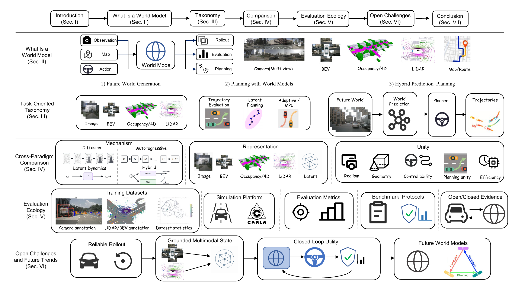
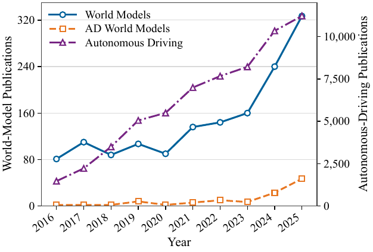
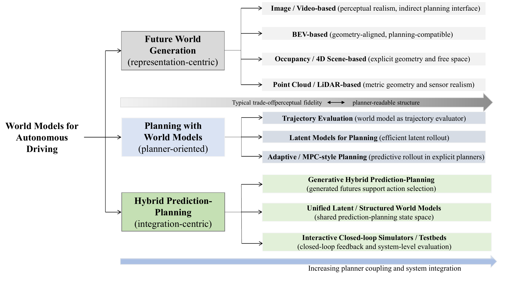
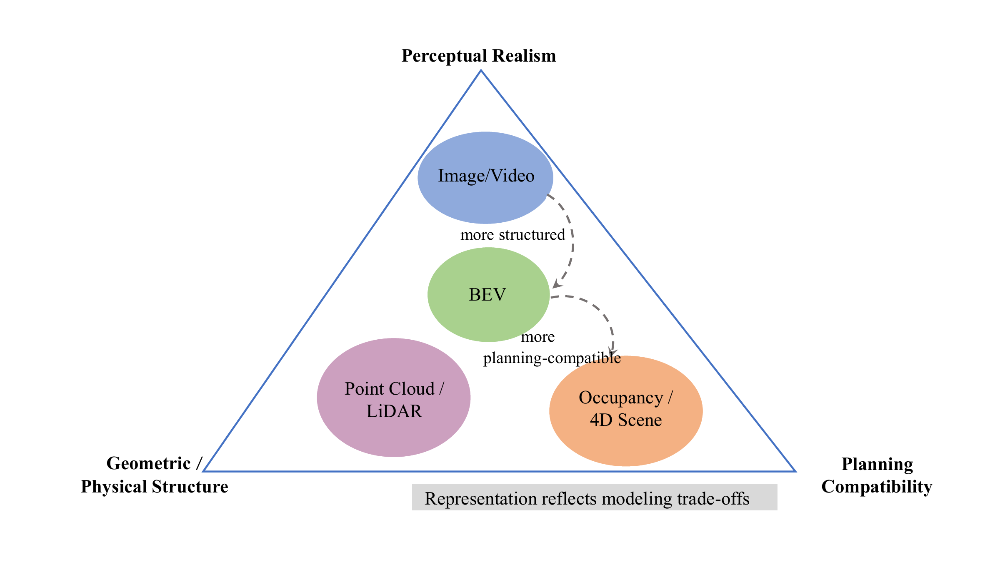
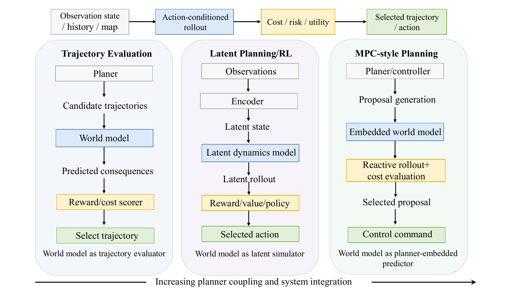
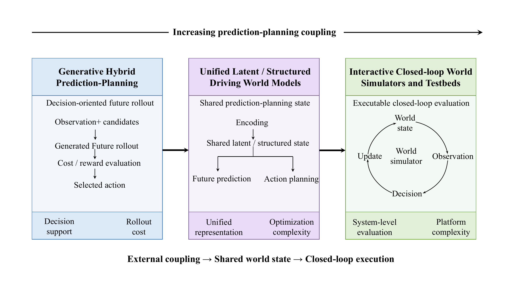
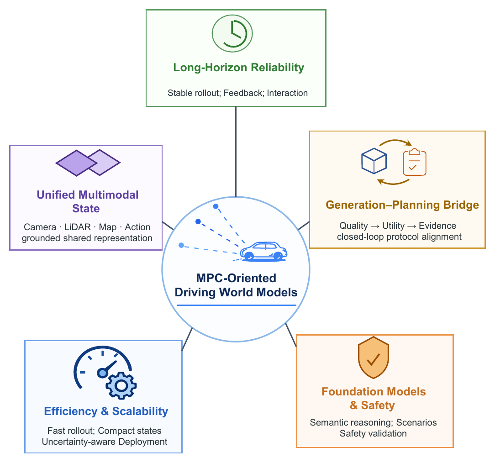

Task-Oriented Taxonomy
Separates generating a future from using a future for action scoring, policy learning, and closed-loop simulation.
Survey Paper | Autonomous Driving | World Models | MPC
A task-oriented survey of autonomous-driving world models, connecting future generation, planner-facing rollout, closed-loop simulation, and MPC-style decision interfaces.
Tongji University, Fudan University, East China Normal University, The Chinese University of Hong Kong, Shenzhen MSU-BIT University, Shenzhen University, The University of British Columbia

Abstract
Autonomous driving systems must reason beyond the current scene: they need to predict how surrounding traffic may evolve, assess candidate actions, and support safe closed-loop behavior. Recent work has moved from perception and short-horizon prediction toward driving world models that can generate future scenes, roll out possible states, or expose transitions for decision making.
This survey adopts a Model Predictive Control perspective and views driving world models as predictive transition interfaces for state rollout, constraint reasoning, cost evaluation, uncertainty handling, and receding-horizon decision making. Existing methods are grouped into future world generation, planning with world models, and hybrid prediction-planning world models. The latest manuscript also adds section cross-references and embeds the project-page link in the paper.
Separates generating a future from using a future for action scoring, policy learning, and closed-loop simulation.
Compares models by rollout, constraints, uncertainty, and cost-relevant state exposure rather than visual realism alone.
Connects datasets, simulators, metrics, benchmarks, and the gap between open-loop fit and closed-loop evidence.
Publication Trend
The paper tracks autonomous-driving research, world-model research, and autonomous-driving world-model research from 2016 to 2025 using Web of Science topic queries.

MPC-Oriented Interface
st+1 ~ ptheta(. | st, at, zt)
The model advances world state under observations, ego action, route, map, agent history, language, or scene metadata.
min E[sum l(sk, ak) + lT(sH)]
The planner evaluates candidate actions by predicted consequences over a receding horizon.
quality -> actionability -> closed-loop utility
Visual, geometric, controllability, planning, and safety metrics should form a connected evidence chain.
Task-Oriented Taxonomy

Generates future scenes or states in visual, BEV, occupancy, LiDAR, or structured spaces.
Uses imagined futures for trajectory scoring, latent policy learning, rewards, values, or MPC-style rollout.
Couples world modeling and decision making through shared latent states, generated futures, or executable simulators.
Representation-Specific Views



Representative Methods
| Study | Role | Approach | State or Interface | Evidence |
|---|---|---|---|---|
| FIERY (ICCV 2021) | Generation | Probabilistic BEV latent dynamics with ego-motion conditioning. | BEV instance masks, motion fields, trajectories. | nuScenes and Lyft; scene rollout, mainly prediction. |
| GAIA-1 (arXiv 2023) | Generation | Discrete-token autoregressive video world model with text and action control. | Future camera video tokens. | Internal logs; controllable visual imagination. |
| DriveDreamer (ECCV 2024) | Generation | Conditional diffusion with HD maps, boxes, and ego actions. | Action video and traffic layout. | nuScenes; generation and augmentation evidence. |
| OccWorld (ECCV 2024) | Generation | Occupancy tokenizer with spatio-temporal Transformer. | 3-D occupancy and ego trajectory. | nuScenes; planner-facing state evidence. |
| DOME (arXiv 2024) | Generation | Spatio-temporal diffusion for long-horizon occupancy. | Multi-step occupancy states. | nuScenes; long-horizon geometric forecasting. |
| Drive-OccWorld (AAAI 2025) | Generation | BEV memory and action-conditioned occupancy decoding. | 4-D occupancy, flow, and cost cues. | nuScenes; directly supports candidate scoring. |
| MP3 (CVPR 2021) | Planning | BEV-centric perception, prediction, and planning. | BEV map, agent futures, ego trajectory. | Open-loop and closed-loop CARLA-style evaluation. |
| Think2Drive (ECCV 2024) | Planning | Dreamer-style latent dynamics for efficient reinforcement learning. | Latent transitions, rewards, and policies. | Closed-loop CARLA-V2 tasks. |
| WoTE (ICCV 2025) | Planning | BEV world model for online trajectory evaluation. | Future BEV states and trajectory scores. | NAVSIM and Bench2Drive; MPC-aligned evidence. |
| Raw2Drive (NeurIPS 2025) | Planning | Raw-sensor world model aligned by privileged guidance. | Latent rollout for policy optimization. | CARLA v2; compact sensor-latent testing. |
| Drive-WM (CVPR 2024) | Hybrid | Multi-view imagination for action comparison. | Future video and reward cues. | nuScenes-style planning evidence. |
| GenAD (ECCV 2024) | Hybrid | Instance-centric generative end-to-end driving. | Scene-token futures and ego plans. | nuScenes planning evaluation. |
| DrivingGPT (ICCV 2025) | Hybrid | Unified autoregressive modeling of observations and actions. | Visual and action token rollout. | nuPlan and NAVSIM planning evidence. |
| DriveArena (ICCV 2025) | Hybrid | Generative closed-loop traffic scene evolution. | Reactive simulation and reward feedback. | Closed-loop simulator evidence. |
Cross-Paradigm Comparison
Strong for high-dimensional multimodal generation, but sampling cost and constraint maintenance can limit online use.
Flexible token interfaces for video, occupancy, text, and action, with exposure error during long rollout.
Efficient for policy learning and value estimation, but hidden states are hard to verify for safety-critical variables.
Preserve interaction and map relations, while often under-representing dense geometry and appearance.
Datasets, Simulators, Metrics, Benchmarks
Video datasets support future synthesis; multimodal datasets such as KITTI, nuScenes, Waymo, and nuPlan support BEV, fusion, planning, and map-conditioned modeling.
CARLA, MetaDrive, LimSim, Waymax, and learned simulation ecosystems determine how world models interact with routes, agents, sensors, and closed-loop feedback.
Perceptual quality, geometric correctness, controllability, planning score, safety, comfort, progress, and rule compliance measure different evidence layers.
nuPlan, Bench2Drive, NAVSIM, BridgeSim, and WorldSimBench define the comparison contract for planning, actionability, and open-loop versus closed-loop evidence.
Open Challenges

Control-relevant rollout must remain stable under planner feedback, multi-agent interaction, uncertainty, and safety constraints.
Camera, LiDAR, maps, language, trajectory commands, and interaction cues need a shared state abstraction grounded in physical semantics.
Perceptual realism must translate into free space, collision risk, agent intent, comfort, route progress, and closed-loop consequence.
Online planning requires repeated rollouts, uncertainty estimates, and simulator integration under latency and memory constraints.
VLMs and VLA models can help scenario construction and semantic reasoning, but must remain grounded in traffic geometry and feasible motion.
Authors
Citation
@article{huang2026worldmodelsautonomousdriving,
title = {World Models for Autonomous Driving: From Future Generation to Decision Making},
author = {Huang, Han and Yang, Dingkang and Guo, Lulu and Cheng, Jing and Liu, Yang and Leung, Victor C. M. and Chen, Hong},
journal = {IEEE Transactions on Intelligent Transportation Systems},
year = {2026},
note = {Manuscript}
}